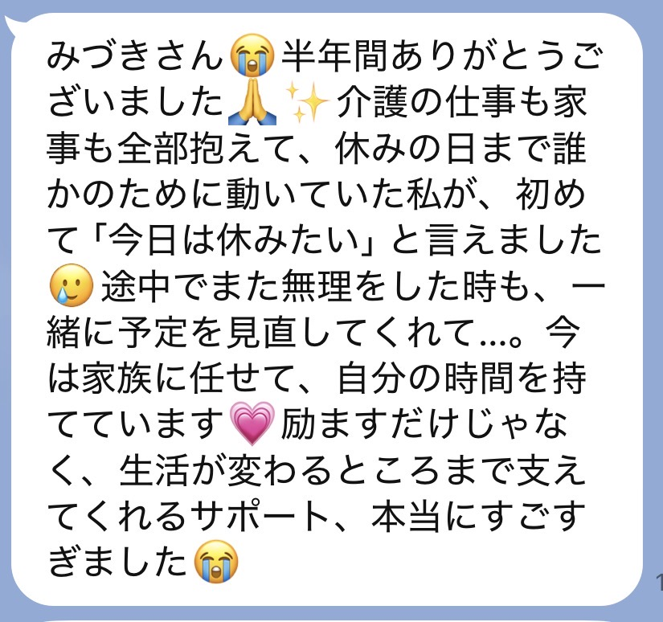
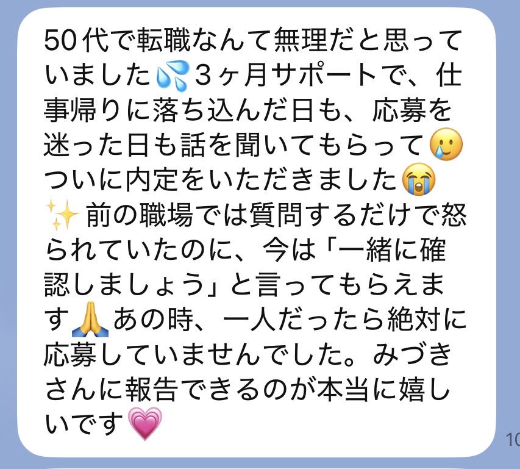
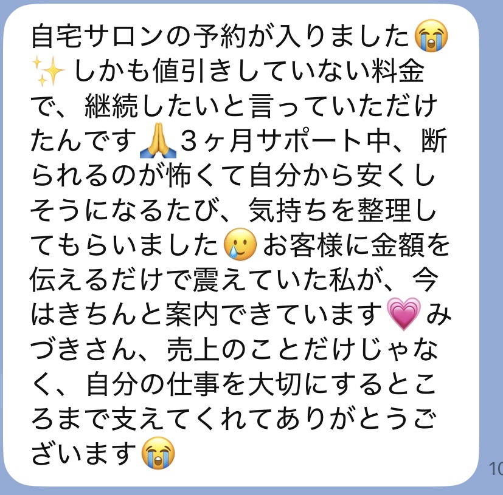
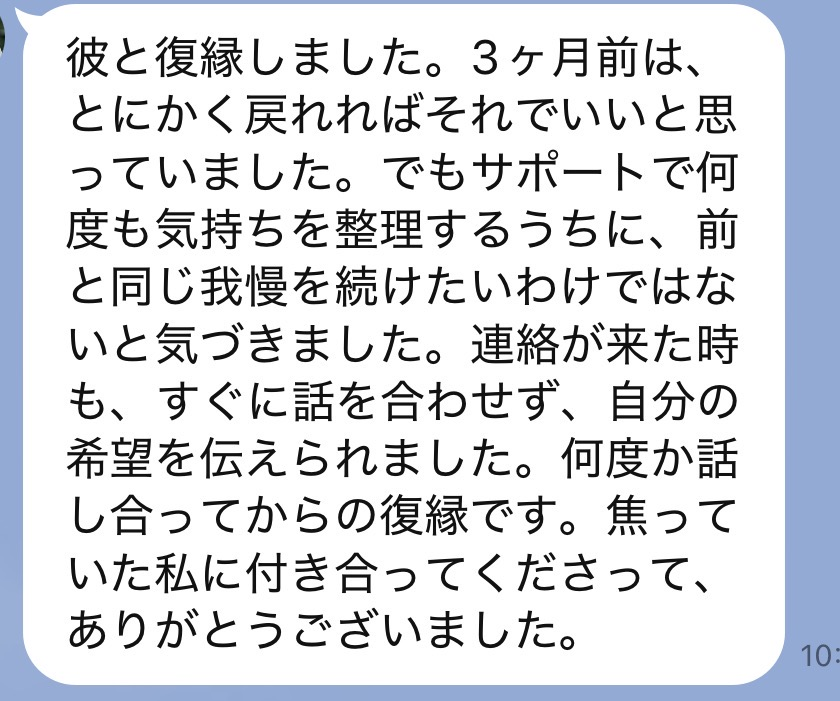
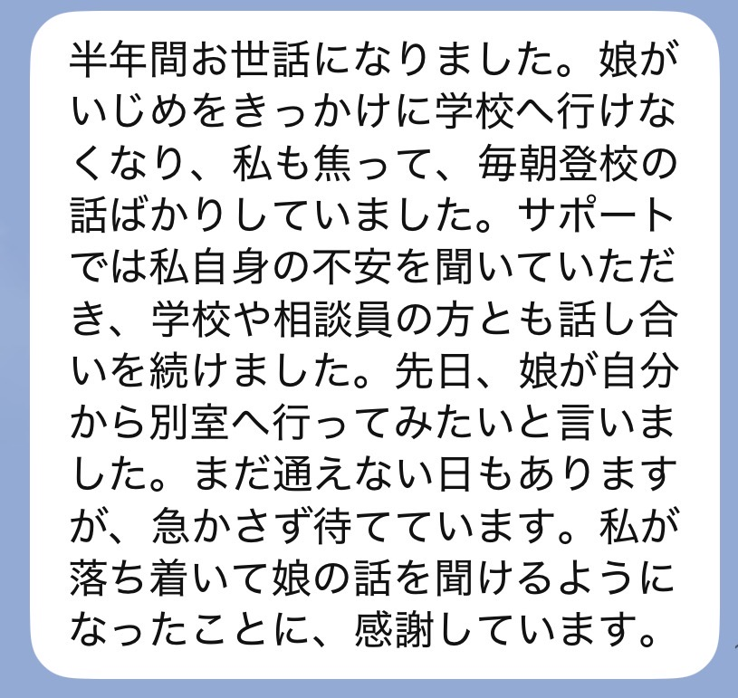

月読の伴走
読み終えて、
少し静かに
なったあなたへ
本鑑定を受け取った方だけが読めるページです
SCROLL
あの鑑定書、書いたのは私です。
だから、これを読んでいる今の状態も、だいたい分かります。
胸のあたりが、少し軽くなっている。
ずっと同じところで躓いていた理由が、やっとわかった。
その感覚、本物です。

いつもの時間に目が覚めて、
いつもの家事をして、
いつもの職場に行って、
いつもの人に、いつもの顔で応えている。
そして夜、布団の中で、ふと思う。
——あれ、私、
何をわかったんだっけ。
忘れっぽいわけじゃない。鑑定が浅かったわけでもない。
その中で、同じことが
何度も起きるのを見てきました。
たとえば、こういうことが起きます。
意志が弱いからでは
ありません。
何十年もかけて
身についたものは、
気づいたくらいでは
変わらない。
「今日も言えなかった」
「また引き受けてしまった」
「私さえ我慢すれば」
不安な時に我慢する。嫌なのに断れない。
自分の本音を、いちばん後回しにする。
癖なんです、これ。

変わろうと思った日、これまでにもありましたよね。
本を読んで、たしかにと思った日。
誰かの話を聞いて、明日から変えようと決めた日。
年が明けて、今年こそはと思った日。
あの時、たしかにそう思った。嘘じゃなかった。
でも二週間後には、また元の場所。
あなたは、変われない人じゃない。
一人で変わろうとしていただけです。
本鑑定でお渡ししたものは、地図です。
今どこにいるのか。
どこで道を間違えやすいのか。
どちらへ向かえば、流れが変わるのか。

疲れている日は、地図を開くことすら忘れます。
不安な日は、地図に書いてある道が怖くなります。
急いでいる日は、いつもの近道に戻ってしまいます。
必要なのは、
もっと詳しい地図じゃない。
迷った時に「今、ここですよ」と
言ってくれる人です。
特別な日に、特別なことをする場所ではありません。
なんでもない日の、なんでもない揺れ。
そこに私がいます。
毎朝、その日の意識を整えるためのメッセージを送ります。
1ヶ月なら約30通、3ヶ月なら約90通。読むのに一分もかかりません。
でも、この一分があるかないかで、その日一日の選び方が変わっていきます。
鑑定で見えたことを、毎朝、思い出せる状態にしておく。
それだけのことですが、一人ではいちばん続かないことでもあります。

何かあった時、LINEに送ってください。当日中にお返事します。回数の制限はありません。
今日こんなことを言われて、胸がざわついた。
断ろうと思ったのに、また引き受けてしまった。
理由はわからないけれど、朝から落ち着かない。
そういう小さな揺れこそ、送ってください。
大きくなってからでは、もう戻る方向に足が向いてしまっているからです。
状況を送っていただいたら、今あなたの流れに何が起きているのかを視て、文章にしてお送りします。
どこで引っかかっているのか。
どう動けば、自分を置いていかずに済むのか。
そこを一緒に整理していきます。

遠隔で波動を調整し、その時の状態をメッセージとともにお送りします。
週に1〜2回、3ヶ月なら13〜26回になります。
「なんだか疲れが取れない」
「理由もないのに落ち込む」
「人と会った後、どっと重い」
自分では気づけないうちに、人の気を受け取りすぎている。
そういう時に、外側から整えます。
定期的にヒーリングを行い、滞っている部分に流れを戻していきます。
やっていることは、
地味です。
毎朝、声をかける。
揺れたら、その日のうちに返す。
今どこにいるかを、文章で伝える。
週に一度か二度、外側から整える。
届いたLINEを、そのまま載せています。





プランの違いは、期間だけです。
毎朝のメッセージも、LINE相談も、
霊視ナビも、波動調整も、ヒーリングも、
どのプランでも同じように届きます。
だから、値段で
選ばなくていいんです。
あなたが、
どこまで行きたいかです。
遠隔の波動調整は、一度で全部が変わるものじゃないんです。
一度目は、表面のざわつきが静かになる。
二度目で、身体が少しゆるむ。
三度目、四度目と重ねていくうちに、
ようやく奥のほうまで届きはじめます。
水を一滴垂らしても、乾いた土は湿りません。
でも、毎日少しずつ落としていくと、いつのまにか奥まで染みている。
あれと、同じです。
プランの違いは、
同じ調整を
何度重ねられるか。
そこだけです。
表面の、いちばん揺れているところまで
今、波が激しい方へ。
正直にお伝えすると、二週間は、整い始めた頃に終わります。
二週間ではじめる
身体が、少しずつ覚えはじめる回数
整った後、必ず一度、元に戻ろうとする波が来ます。一人だと、ここでほとんどの人が戻ります。
一ヶ月ではじめる
奥のほうまで、届きはじめる回数
気づきが行動に変わり、日常に馴染むまでには時間がかかります。
三ヶ月は、あなたの周りが変わり始めるのに必要な、いちばん短い時間です。

染みこんで、元に戻りにくくなる回数
仕事、お金、家族、自分自身。いくつものテーマが絡んでいる方へ。
六ヶ月ではじめる今の状況を、そのままLINEへ。
どの長さが合うか、私からお返事します。
食費を削る。支払いを後ろにずらす。誰かに借りる。
もしそうなるなら、今回は見送ってください。
暮らしを壊してまで来ることを、神様は望んでいません。
私も、望んでいません。
状況が変わった時に、また来てくださったらいい。
その時、私はここにいます。

本鑑定を書いている時、私はいつも同じことを思っています。
この人は、これを読んだ後、一人で日常に戻っていくんだな、ということです。
鑑定書は、どれだけ丁寧に書いても、紙です。
読んだ日は、たしかに心が動く。
でも、次の朝が来て、その次の朝が来て、気づけば元の速さで走っている。
だから、この場所を作りました。
朝、声をかける。
揺れたら、その日のうちに返す。
今どこにいるか、伝える。
それだけです。
でも、あなたが戻りかけた時に、毎回そこに誰かがいるというのは、一人で頑張ることとは、まったく違います。